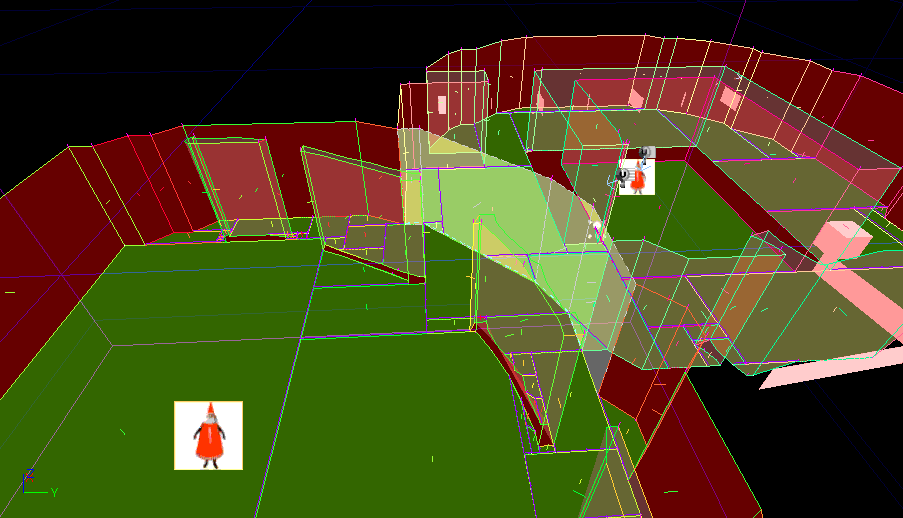

UDN
Search public documentation:
UsingNavigationMeshes
日本語訳
中国翻译
한국어
Interested in the Unreal Engine?
Visit the Unreal Technology site.
Looking for jobs and company info?
Check out the Epic games site.
Questions about support via UDN?
Contact the UDN Staff
中国翻译
한국어
Interested in the Unreal Engine?
Visit the Unreal Technology site.
Looking for jobs and company info?
Check out the Epic games site.
Questions about support via UDN?
Contact the UDN Staff
UE3 Home > AI & Navigation > Using Navigation Meshes
Using Navigation Meshes
Overview
The Pylon
Linking Pylons together
Getting pylons to link to each other is pretty easy. You just need to make sure that the exploration area for the pylons you want to link overlap a little. For example here are two pylons whose expansion radii overlap slightly : This will result in two meshes which are linked along the overlapping line between the two spheres. Here's a shot of the resulting mesh:  Note the light yellow filled vertical surfaces along the interface between the two pylons. This indicates the two pylons are loose-linked to each other. (Loose-linked meaning if both pylons are loaded, AIs can walk between them.A word about pylons within other pylons
It's perfectly OK to have a pylon completely within another pylons expansion area. What will happen is that the smaller pylon will be built first, and the larger one will build around the smaller linking into it as appropriate. However! keep in mind that you shouldn't ever have two pylons which are both completely inside each other. This is easier to explain with a picture: This isn't going to cause your computer to melt, but one of the pylons in this situation simply won't get built, so you may end up not getting the mesh you're expecting.
This isn't going to cause your computer to melt, but one of the pylons in this situation simply won't get built, so you may end up not getting the mesh you're expecting.
Setting Expansion Area for a Pylon
There are two methods for telling a pylon what its bounds should be. The default and simplest method is just a radius. When you first place a pylon in the level you will see a sphere drawn around it just like a point light. Inside this sphere is where the pylon will explore. The alternative is giving the pylon a list of volumes within which to expand. This method is a little more complicated, but gives you more control. To set this up you can either select the pylon, and then manually insert the volumes into the list in the properties window, or do what the cool kids do and use the snazy way. The snazy way is to select the pylon, then select all the volumes you want it to explore inside, and push Ctrl+Shift+L. This will tell the pylon to add all volumes you have selected currently to its list. All volumes and pylon selected: All volumes linked to pylon: (Note When a pylon is selected, any linked volumes will be drawn translucent, and a yellow line will be drawn linking the pylon to the volume. this is here to help you see which volumes that pylon is linked to) Also, to un-link volumes from the pylon simply select the pylon, and the volume you want to un-link and hit Ctrl+Shift+L and it will toggle the linkage to that pylon. (You can also just delete it from the ExpansionVolumes list in the actor properties of the pylon)The Dynamic Pylon
 Dynamic pylons are pylons that can move. This is useful for things like lifts, or moving platforms that you want AI to be able to move on, as well as move onto/off of. For example take the platform in this example:
The dynamic pylon on this platform will build a mesh within its radius, but the important thing to note is that the mesh is relative to the Dynamic Pylon, which is now attached to the moving platform. This means that as the platform moves, so will the mesh.
Once the platform has stopped moving the dynamic pylon will then automatically link itself to the rest of the mesh in the area.
(note the red dashed lines indicating cross-pylon edges)
The most important thing to remember with dynamic pylons is that any part of the mesh built for the dynamic pylon is going to move with it! so be careful with where you let the dynamic pylon expand.
That's it! You're ready to add meshes to your level.
Here's some info on debug drawing and what it all means:
Dynamic pylons are pylons that can move. This is useful for things like lifts, or moving platforms that you want AI to be able to move on, as well as move onto/off of. For example take the platform in this example:
The dynamic pylon on this platform will build a mesh within its radius, but the important thing to note is that the mesh is relative to the Dynamic Pylon, which is now attached to the moving platform. This means that as the platform moves, so will the mesh.
Once the platform has stopped moving the dynamic pylon will then automatically link itself to the rest of the mesh in the area.
(note the red dashed lines indicating cross-pylon edges)
The most important thing to remember with dynamic pylons is that any part of the mesh built for the dynamic pylon is going to move with it! so be careful with where you let the dynamic pylon expand.
That's it! You're ready to add meshes to your level.
Here's some info on debug drawing and what it all means:
Debug Drawing